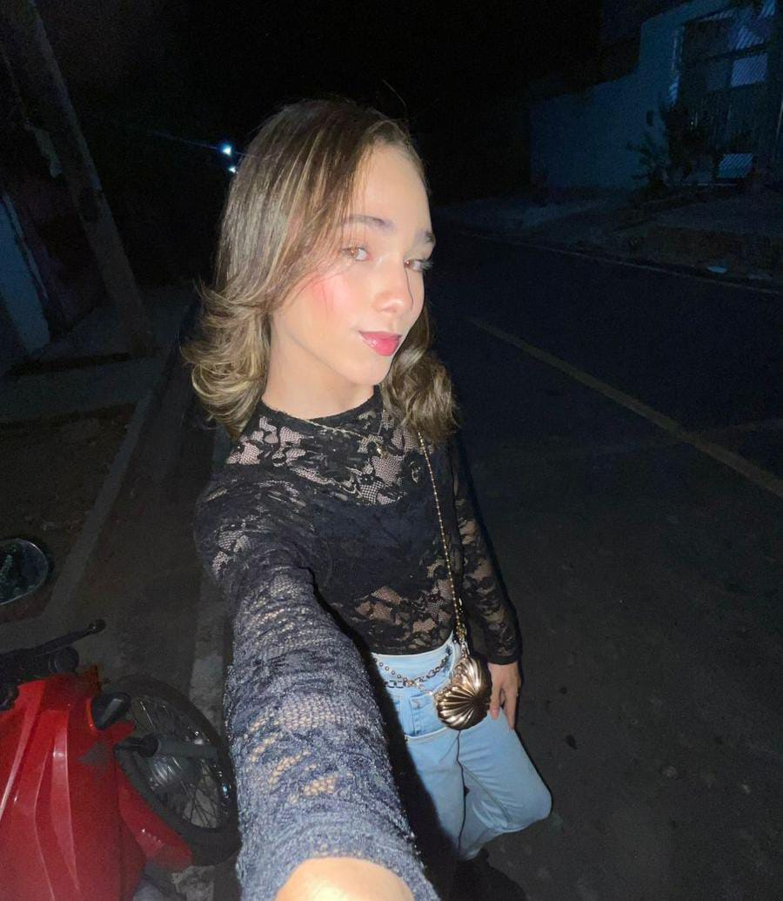
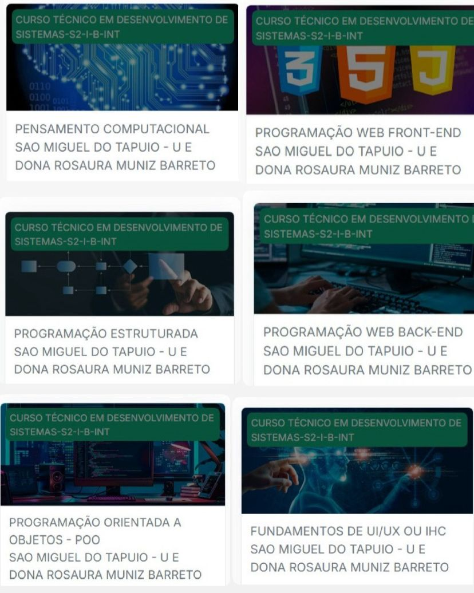

Olá,me chamo Evelyn
Eu moro em São Miguel do Tapuio e estudo no CETI Dona Rosaura Muniz Barreto.Tenho 17 anos e gosto bastante do meu curso de Desenvolvimento de sistema.
Autor:Evelyn
Sou alguém que valoriza o respeito, a sinceridade e a empatia, porque acredito que tratar bem as pessoas faz toda diferença no nosso dia a dia.
Autor:Evelyn Lista dos cursos e plataformas concluídas durante os estudos. sou uma pessoa carismática, determinada e sonhadora. Gosto de estar com meus amigos e família, ouvir música, assistir filmes, tirar fotos e conhecer lugares novos. Também gosto de aprender coisas diferentes e me envolver em atividades criativas,como desenhar e escrever. Autor:Evelyn Objetivos pessoais para a vida Plataformas finalizadas

Um pouco mais sobre mim
Minhas metas
Assim sou eu!